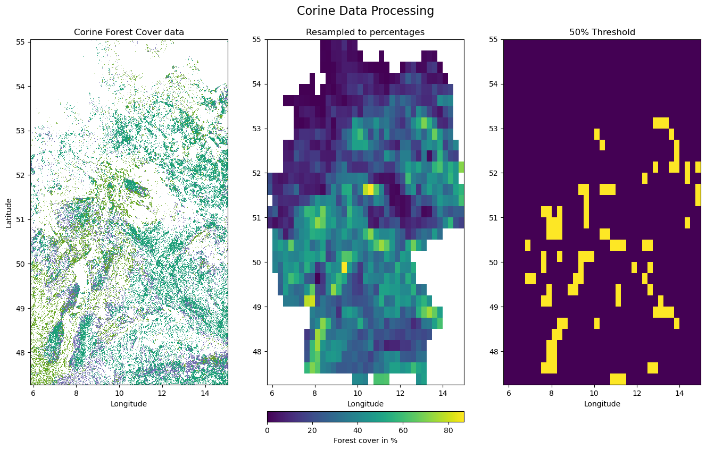
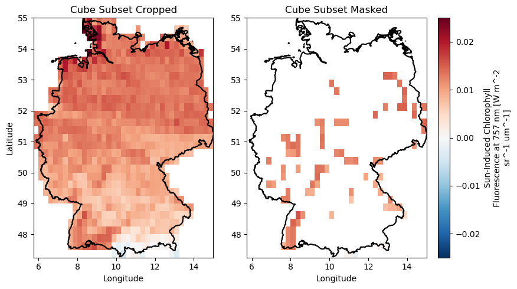
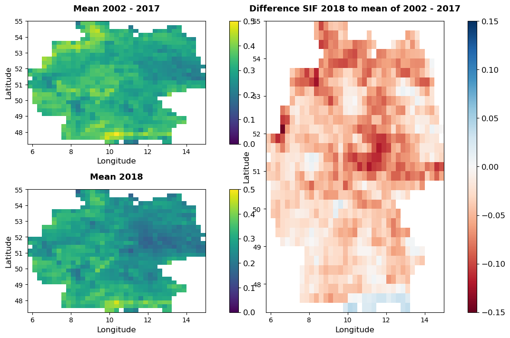
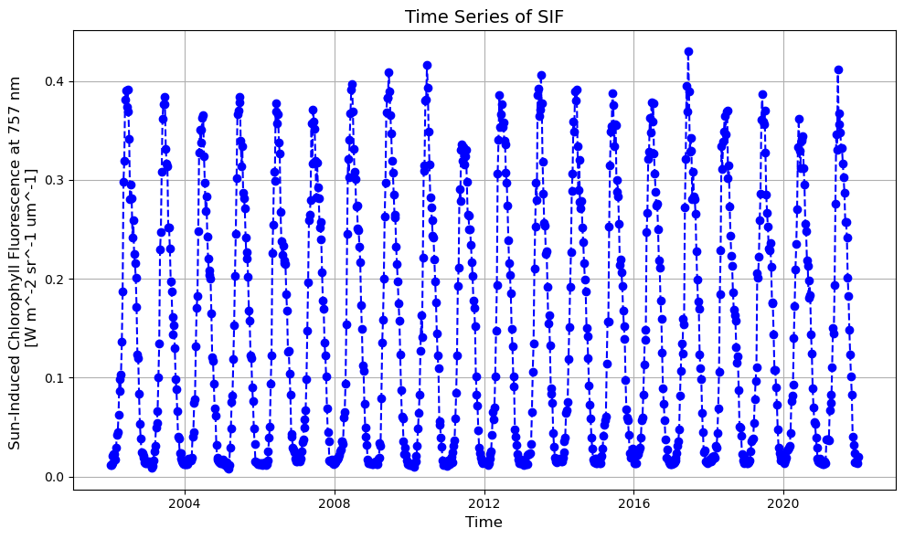
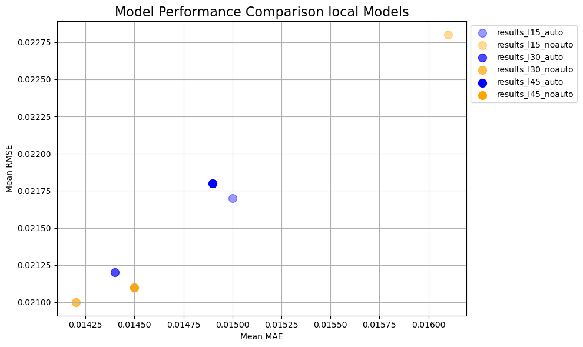
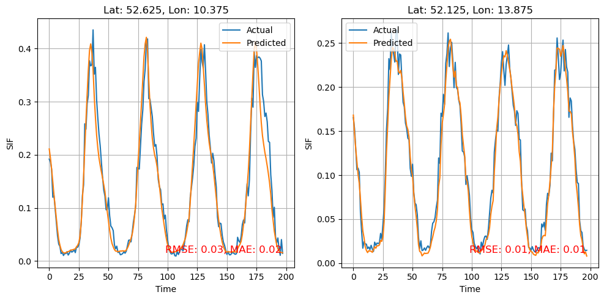

import sysimport osimport geopandas as gpdimport xarray as xrimport rioxarray as rioimport jsonimport numpy as npfrom matplotlib.colors import ListedColormap, Normalizeimport matplotlib.pyplot as pltfrom mpl_toolkits.axes_grid1.inset_locator import inset_axesfrom matplotlib.gridspec import GridSpec# Add the parent directory to sys.pathsys.path.append(os.path.abspath(os.path.join('scripts')))# from scripts.config import *from scripts.utils import create_cube_subset, create_pathsfrom scripts.s03_base_analysis import base_analysis, change_plot, plot_timeseriesfrom scripts.config import variablesfrom scripts.modelling_functions import plot_multiple_results;import matplotlib.pyplot as plt# Write data to disk set to Falsewrite_data =Falsedef plot_multiple_results(results_dict, time_index =None): num_plots =len(results_dict) num_cols =2 num_rows = (num_plots +1) // num_cols fig, axes = plt.subplots(num_rows, num_cols, figsize=(17, num_rows *7))if num_rows * num_cols >1: axes = axes.flatten() # Flatten the axes array for easier iterationelse: axes = [axes] # Ensure axes is iterablefor i, (lat_lon, data_dict) inenumerate(results_dict.items()): ax = axes[i] testY = data_dict['results']['true_values'] forecasts = data_dict['results']['predicted_values'] mae = data_dict['evaluation']['mae'] rmse = data_dict['evaluation']['rmse']# Assuming lat_lon keys are in the format "(lat, lon)" and need to be converted from string lat, lon =eval(lat_lon) # Convert the string key back to tuple if necessary# Generate a time index from the length of the testY data# time_index = range(len(testY)) ax.plot(time_index, testY, label="Actual") ax.plot(time_index, forecasts, label="Predicted") ax.set_title(f"Lat: {lat}, Lon: {lon}") ax.set_xlabel("Time") ax.set_ylabel("Value") ax.legend() ax.grid(True)# Add MSE to the corner ax.text(0.95, 0.05, f"RMSE: {rmse:.2f}, MAE: {mae:.2f}", verticalalignment='bottom', horizontalalignment='right', transform=ax.transAxes, color='red', fontsize=12)# Adjust the layout to prevent overlap and make sure all plots are visible plt.tight_layout() plt.show()
2024-07-28 18:22:12.914030: I external/local_tsl/tsl/cuda/cudart_stub.cc:32] Could not find cuda drivers on your machine, GPU will not be used.
2024-07-28 18:22:12.916380: I external/local_tsl/tsl/cuda/cudart_stub.cc:32] Could not find cuda drivers on your machine, GPU will not be used.
2024-07-28 18:22:12.951885: I tensorflow/core/platform/cpu_feature_guard.cc:210] This TensorFlow binary is optimized to use available CPU instructions in performance-critical operations.
To enable the following instructions: AVX2 FMA, in other operations, rebuild TensorFlow with the appropriate compiler flags.
2024-07-28 18:22:13.936631: W tensorflow/compiler/tf2tensorrt/utils/py_utils.cc:38] TF-TRT Warning: Could not find TensorRT
1.2 Setup
First we setup the data path and use create_paths() from utils to create paths necessary throughout the analysis.
Second we use create_subset() to create a subset of the Earth System Data Cube, croped to:
# Create a data directorydata_path ="data"os.makedirs(data_path, exist_ok=True)# Create paths to the datagermany_shp_path, corine_file_path, cube_sample_path, cube_crop_path, cube_crop_mask_path = create_paths(data_path=data_path)# Create a subset of the Earth System Data Cube, containing only relevant variables and the desired spatial and temporal extentcube_subset = create_cube_subset()# remove attributescube_subset.attrs = {}print(cube_subset)
# Load cube subset croped and cube subset maskcube_subset_crop = xr.open_dataset(cube_crop_path)cube_subset_mask = xr.open_dataset(cube_crop_mask_path)# Load the forest percentages rasterforest_percentages = rio.open_rasterio(cube_crop_path.replace(".nc", "_percentages.tif"))# Create a grid spec with extra space at the bottomfig = plt.figure(figsize=(14, 8))gs = GridSpec(2, 3, height_ratios=[1, 0.03], hspace=0.15)# Create subplots in the grid specax0 = fig.add_subplot(gs[0, 0])ax1 = fig.add_subplot(gs[0, 1])ax2 = fig.add_subplot(gs[0, 2])# Plot rasterio datasetcorine_raster.plot(ax=ax0, alpha=1, vmin=vmin, vmax=vmax, cmap=cmap, add_colorbar=False)ax0.set_title("Corine Forest Cover data")ax0.set_ylabel("Latitude")ax0.set_xlabel("Longitude")# Plot the forest percentages rasterforest_im = forest_percentages.plot(ax=ax1, alpha=1, add_colorbar=False)ax1.set_title("Resampled to percentages")ax1.set_ylabel("")ax1.set_xlabel("Longitude")# Add a colorbar at the bottom for the forest percentages rastercax = fig.add_subplot(gs[1, 1]) # Add a subplot in the second row, middle columncbar = fig.colorbar(forest_im, cax=cax, orientation='horizontal')cbar.set_label("Forest cover in %")# Plot the forest cover 50% thresholdcube_subset_crop.forest_cover_50.plot(ax=ax2, vmin=0, add_colorbar=False)ax2.set_title("50% Threshold")ax2.set_ylabel("")ax2.set_xlabel("Longitude")# Main title for the entire figurefig.suptitle("Corine Data Processing", fontsize=16)# Adjust the layout to ensure everything fits wellplt.subplots_adjust(left=0.05, right=0.95, top=0.90, bottom=0)plt.show()

Showing croped and masked + croped cube
Code
# Create subplotsfig, axes = plt.subplots(1, 2, figsize=(10, 5))# Plot the croped datasetim = cube_subset_crop.sif_gosif.isel(time=0).plot(ax=axes[0], add_colorbar=False, vmin =-0.025, vmax =0.025, cmap='RdBu_r')axes[0].set_title("Cube Subset Cropped")axes[0].set_xlabel("Longitude")axes[0].set_ylabel("Latitude")# Plot the masked datasetcube_subset_mask.sif_gosif.isel(time=0).plot(ax=axes[1], add_colorbar=True, vmin =-0.025, vmax =0.025, cmap='RdBu_r')axes[1].set_title("Cube Subset Masked")axes[1].set_xlabel("Longitude")axes[1].set_ylabel("")# Add germany bordergermany_gpd.plot(ax=axes[0], edgecolor='black', alpha=1, linewidth=1.5, facecolor ="none")germany_gpd.plot(ax=axes[1], edgecolor='black', alpha=1, linewidth=1.5, facecolor ="none" )# Adjust layoutplt.tight_layout(rect=[0, 0, 0.9, 1]) # Adjust rect to make room for the colorbarplt.show()

1.5 Basic Analysis of SIF-Data
The following part will
Perform a change detection by calculating the summer mean for each year and the change for the year 2018 to the baseline up to 2017
Resulting Plots:
Time-Series of SIF, considering only cells with more than 50% forest cover in 2000
Difference SIF 2018 to mean of 2002 - 2017 over all cells in germany
Plot summer means for the SIF variable for the reference period 2000-2017, 2018 and the difference of them.
Code
# Calculate the temporal changes in the variables summer_sif_mean_cube, summer_mean_to_2017, changes = base_analysis(cube_subset_crop, years=[2018, 2019])# Calculate the summer mean for each year and the change compared to the baseline up to 2017summer_mean_cube, summer_mean_to_2017, changes = base_analysis(cube_subset_crop, years=[2018, 2019])# Select only year 2018summer_mean_2018 = summer_sif_mean_cube.sel(year=2018)change_plot(ref_period = summer_mean_to_2017, data_2018 = summer_mean_2018, changes = changes);

Plot Sif Time series (mean over masked cells in germany)
Code
# Save plot of timeseries:plot_timeseries(cube_subset_mask, save_path = os.path.join("results", "figures", "timeseries_full.png"))# plot_timeseries(cube_subset_mask, time_range= ["2015-01-01", "2022-12-31"], save_path = os.path.join("results", "figures", "timeseries_recent.png"))

1.6 Prelimnary Modelling
To determine what is the appropriate model structure, we tested for different approaches.
Four general model setups were tested, which are differing whether they are global or local models and whether they have an auto regressive component or not, meaning whether they encoperate a shifted version of target variable as a predictor.
To find the best hyperparameters 3 look back periods were tested and a grid search cross-validation was done.
import osimport jsonfrom collections import defaultdict# Function to read JSON files and extract relevant datadef read_json_files(base_dir):# Initialize a dictionary to store the extracted data results = {"results_l15": {"auto": [], "noauto": []},"results_l30": {"auto": [], "noauto": [], "global_auto": [], "global_noauto": []},"results_l45": {"auto": [], "noauto": []}, }# Traverse through the base directory and subdirectoriesfor lookback_dir in ["results_l15", "results_l30", "results_l45"]: lookback_path = os.path.join(base_dir, lookback_dir)ifnot os.path.isdir(lookback_path):continue# Identify files containing "auto", "noauto", or "global" in their namesfor filename in os.listdir(lookback_path):if"global"in filename:continueif"noauto"in filename: key ="noauto"elif"auto"in filename: key ="auto"else:continue file_path = os.path.join(lookback_path, filename)# Read and parse the JSON filewithopen(file_path, 'r') asfile: data = json.load(file)# Extract relevant data and store it in the results dictionaryfor location, details in data.items(): result_entry = {"location": location,"best_params": details.get("best_params", {}),"look_back": details.get("look_back", 0),"evaluation": details.get("evaluation", {}), } results[lookback_dir][key].append(result_entry)return results# Function to calculate mean performance metricsdef calculate_mean_performance(results):# Initialize dictionaries to store the sum and count of performance metrics performance_sums = defaultdict(lambda: {"mae": 0, "rmse": 0, "count": 0}) mean_performance = {}# Sum the performance metrics and count the number of entriesfor lookback in results:for auto_type in results[lookback]:for entry in results[lookback][auto_type]: evaluation = entry["evaluation"]if"mae"in evaluation and"rmse"in evaluation: performance_sums[f"{lookback}_{auto_type}"]["mae"] += evaluation["mae"] performance_sums[f"{lookback}_{auto_type}"]["rmse"] += evaluation["rmse"] performance_sums[f"{lookback}_{auto_type}"]["count"] +=1# Calculate the mean performance metricsfor key, sums in performance_sums.items():if sums["count"] >0: mean_performance[key] = {"mean_mae": np.round(sums["mae"] / sums["count"], 4),"mean_rmse": np.round(sums["rmse"] / sums["count"], 4) }else: mean_performance[key] = {"mean_mae": None, "mean_rmse": None}return mean_performance# Base directory where the results folders are locatedbase_dir = os.path.join("results", "modelling")# Read JSON files and extract dataresults_data = read_json_files(base_dir)# Calculate mean performance metricsmean_performance_data = calculate_mean_performance(results_data)globa_auto_path = os.path.join(base_dir, "results_l30", "results_global_auto_l30.json")global_noauto_path = os.path.join(base_dir, "results_l30", "results_global_noauto_l30.json")def get_mae_rmse_from_json(json_path):withopen(json_path, 'r') asfile: data = json.load(file)return np.round(data["evaluation"]["mae"],3), np.round(data["evaluation"]["rmse"],3)global_results = get_mae_rmse_from_json(globa_auto_path), get_mae_rmse_from_json(global_noauto_path)import pandas as pd# Convert the dictionary to a DataFramedata = []for key, values in mean_performance_data.items(): lookback, auto_type = key.rsplit('_', 1) data.append({'model' : 'local','lookback': lookback[-2:],'type': auto_type,'mean_mae': values['mean_mae'],'mean_rmse': values['mean_rmse'] })# Add global results to the datadata.append({'model' : 'global','lookback': '30','type': 'auto','mean_mae': global_results[0][0],'mean_rmse': global_results[0][1]})data.append({'model' : 'global','lookback': '30','type': 'noauto','mean_mae': global_results[1][0],'mean_rmse': global_results[1][1]})# Create a DataFramedf = pd.DataFrame(data)# Display the DataFrameprint(df)
model lookback type mean_mae mean_rmse
0 local 15 auto 0.0150 0.0217
1 local 15 noauto 0.0161 0.0228
2 local 30 auto 0.0144 0.0212
3 local 30 noauto 0.0142 0.0210
4 local 45 auto 0.0149 0.0218
5 local 45 noauto 0.0145 0.0211
6 global 30 auto 0.0330 0.0450
7 global 30 noauto 0.0330 0.0500
Comparison between local models.
Code
import matplotlib.pyplot as pltimport numpy as npfrom matplotlib import cmdef plot_performance_data(mean_performance_data):# Define colors and markers colors = {'auto': "blue",'noauto': "orange" } shades = {'results_l15': 0.4,'results_l30': 0.7,'results_l45': 1 } markers = ['o', 's', 'D', '^']# Create a new figure plt.figure(figsize=(10, 6))# Plot data for each key in the mean performance datafor idx, (key, performance) inenumerate(mean_performance_data.items()): lookback, auto_type = key.rsplit('_', 1) color = colors[auto_type] shade = shades[lookback] plt.scatter(performance['mean_mae'], performance['mean_rmse'], color=color, alpha=shade, label=key, s=100)# Add labels and title plt.xlabel('Mean MAE') plt.ylabel('Mean RMSE') plt.title('Model Performance Comparison local Models', fontsize=16) plt.legend(loc='upper left', bbox_to_anchor=(1, 1)) plt.grid(True) plt.tight_layout()# Show plot plt.show()# Call the function to plot the dataplot_performance_data(mean_performance_data)

1.7 Modelling results
Based on the prelimary results a local model with a lookback of 30 time steps (30 * 8 days = 240 days) was chosen.
Apart from that the modelling setup was the same, except that the number of hyperparameters was reduced based on the prelimary results.
Code
# Reading the results and evaluation from the filewithopen("results/modelling/final/results_full_local_auto_l30.json", 'r') asfile: results_dict = json.load(file)rmse_values = {loc: data['evaluation']['rmse'] for loc, data in results_dict.items()}# Find locations with highest and lowest RMSEhighest_rmse_location =max(rmse_values, key=rmse_values.get)lowest_rmse_location =min(rmse_values, key=rmse_values.get)print(f'Location with highest RMSE: {highest_rmse_location}, RMSE: {rmse_values[highest_rmse_location]:.3f}')print(f'Location with lowest RMSE: {lowest_rmse_location}, RMSE: {rmse_values[lowest_rmse_location]:.3f}')# Extracting true and predicted values for these locationstrue_values_high_rmse = results_dict[highest_rmse_location]['results']['true_values']predicted_values_high_rmse = results_dict[highest_rmse_location]['results']['predicted_values']true_values_low_rmse = results_dict[lowest_rmse_location]['results']['true_values']predicted_values_low_rmse = results_dict[lowest_rmse_location]['results']['predicted_values']# scores for the locationsrmse_high = results_dict[highest_rmse_location]['evaluation']['rmse']mae_high = results_dict[highest_rmse_location]['evaluation']['mae']rmse_low = results_dict[lowest_rmse_location]['evaluation']['rmse']mae_low = results_dict[lowest_rmse_location]['evaluation']['mae']# mean errorsmean_rmse = np.mean([data['evaluation']['rmse'] for data in results_dict.values()])mean_mae = np.mean([data['evaluation']['mae'] for data in results_dict.values()])print(f'Mean MAE: {mean_mae:.3f}, Mean RMSE: {mean_rmse:.3f}')# print the mean errors
Location with highest RMSE: (52.625, 10.375), RMSE: 0.031
Location with lowest RMSE: (52.125, 13.875), RMSE: 0.013
Mean MAE: 0.014, Mean RMSE: 0.020
Code
def plot_multiple_results(results_dict, keys_to_plot=None, time_index=None):# If no specific keys are provided, plot all entries in the dictionaryif keys_to_plot isNone: keys_to_plot =list(results_dict.keys()) num_plots =len(keys_to_plot) num_cols =2 num_rows = (num_plots +1) // num_cols fig, axes = plt.subplots(num_rows, num_cols, figsize=(10, num_rows *5))if num_rows * num_cols >1: axes = axes.flatten() # Flatten the axes array for easier iterationelse: axes = [axes] # Ensure axes is iterablefor i, lat_lon inenumerate(keys_to_plot): ax = axes[i] data_dict = results_dict[lat_lon] testY = data_dict['results']['true_values'] forecasts = data_dict['results']['predicted_values'] mae = data_dict['evaluation']['mae'] rmse = data_dict['evaluation']['rmse']# Assuming lat_lon keys are in the format "(lat, lon)" and need to be converted from string lat, lon =eval(lat_lon) # Convert the string key back to tuple if necessary# Generate a time index from the length of the testY data if not providedif time_index isNone: time_index =range(len(testY)) ax.plot(time_index, testY, label="Actual") ax.plot(time_index, forecasts, label="Predicted") ax.set_title(f"Lat: {lat}, Lon: {lon}") ax.set_xlabel("Time") ax.set_ylabel("SIF") ax.legend() ax.grid(True)# Add RMSE and MAE to the corner ax.text(0.95, 0.05, f"RMSE: {rmse:.2f}, MAE: {mae:.2f}", verticalalignment='bottom', horizontalalignment='right', transform=ax.transAxes, color='red', fontsize=12)# Adjust the layout to prevent overlap and make sure all plots are visible plt.tight_layout() plt.show()plot_multiple_results(results_dict, keys_to_plot=[highest_rmse_location, lowest_rmse_location])

Code
# Extract RMSEs and corresponding locationsrmse_values = {loc: data['evaluation']['rmse'] for loc, data in results_dict.items()}# Sort locations by RMSEsorted_locations =sorted(rmse_values, key=rmse_values.get)# Find two locations with highest and two with lowest RMSElowest_rmse_locations = sorted_locations[:2]highest_rmse_locations = sorted_locations[-2:]location_dict = {'Highest RMSE Locations': lowest_rmse_locations,'Lowest RMSE Locations': highest_rmse_locations}
Code
import matplotlib.pyplot as pltdef plot_forecasts_from_dict(results_dict):""" This function takes a dictionary containing model results and creates plots for the two locations with the highest and two locations with the lowest RMSE values. Args: results_dict (dict): Dictionary containing model results with true and predicted values. Returns: None """# Extract RMSEs and corresponding locations rmse_values = {loc: data['evaluation']['rmse'] for loc, data in results_dict.items()}# Sort locations by RMSE sorted_locations =sorted(rmse_values, key=rmse_values.get)# Find two locations with highest and two with lowest RMSE lowest_rmse_locations = sorted_locations[:2] highest_rmse_locations = sorted_locations[-2:]# Function to plot true vs predicted valuesdef plot_forecast(true_values, predicted_values, title, ax): line1, = ax.plot(true_values, label='True Values', color='blue', linewidth=2) line2, = ax.plot(predicted_values, label='Predicted Values', color='red', linestyle='--', linewidth=2) ax.set_title(title, fontsize=14, y =1.05) ax.set_xlabel('Time', fontsize=12) ax.set_ylabel('SIF', fontsize=12) ax.grid(True)return line1, line2 fig, axs = plt.subplots(2, 2, figsize=(14, 12))# Plot for locations with lowest RMSE lines = []for i, loc inenumerate(lowest_rmse_locations): true_values = results_dict[loc]['results']['true_values'] predicted_values = results_dict[loc]['results']['predicted_values'] line1, line2 = plot_forecast( [val[0] for val in true_values], [val[0] for val in predicted_values],f'Lowest (best) RMSE predictions', ax=axs[0, i] ) lines.append((line1, line2))# Plot for locations with highest RMSEfor i, loc inenumerate(highest_rmse_locations): true_values = results_dict[loc]['results']['true_values'] predicted_values = results_dict[loc]['results']['predicted_values'] line1, line2 = plot_forecast( [val[0] for val in true_values], [val[0] for val in predicted_values],f'Highest (worst) RMSE predictions', ax=axs[1, i] ) lines.append((line1, line2))# Add a main title fig.suptitle('Forecasted vs True Values', fontsize=16, y=0.95)# Add a single shared legend#fig.legend([lines[0][0], lines[0][1]], ['True Values', 'Predicted Values'], loc='lower center', fontsize=12) fig.legend([lines[0][0], lines[0][1]], ['True Values', 'Predicted Values'], loc='lower center', bbox_to_anchor=(0.5, 0.05), ncol=2, fontsize =14)# Adjust layout and show the plot plt.tight_layout(rect=[0, 0.1, 1, 0.93]) plt.show()
Code
# Call the function with the example dictionaryplot_forecasts_from_dict(results_dict)